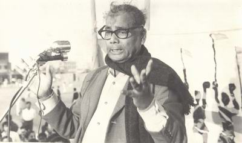

Jasimuddin started writing poems at a young age. As a college student,
he wrote the celebrated poem Kabar (The Grave), a simple tone to
obtain family religion and tragedy. The poem was placed in the
entrance Bengali textbook while he was still a student of Calcutta
University. Jasimuddin is noted for his depiction of rural life and
nature from the viewpoint of rural people. This had earned the title
as Palli Kabi (the rural poet). The structure and content of his
poetry bear a strong flavor of Bengal folklore. His Nakshi Kanthar
Math (Field of the Embroidered Quilt) and Sojan Badiar Ghat (Gypsy
Wharf) is considered two masterpieces and has been translated into
many different languages.[citation needed] Jasimuddin was introduced
with Abbas Uddin by poet Golam Mostofa in a musical program held in
Kolkata in 1931.[8]